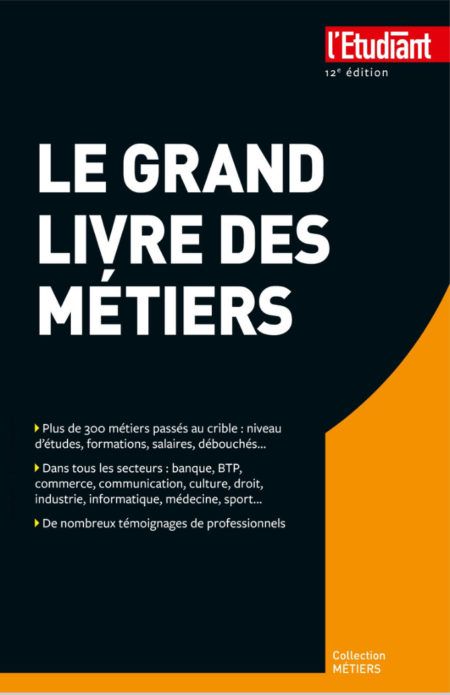

Le Grand Livre des métiers





Carte d’identité
- Auteur
- La rédaction de L’Étudiant
- Genre
- Vie et société
- Sous-genre
- Vie pratique
- Éditeur
- L’Étudiant
- Parution de l’édition
- 2015
- ISBN papier
- 978-2-8176-0462-6
- ISSN
- 1262-327X
- Langue de l’édition
- Français
- Fichier du site
- PDF · 240 pages
12ᵉ édition, dépôt légal en mai 2015. Le guide est organisé par rubriques et contient des index.
Résumé du livreL’essentiel en quelques lignes
La rédaction de L’Étudiant propose une façon de comparer les métiers à partir du quotidien de travail que l’on imagine. Les fiches donnent des repères sur les missions, les formations et les compétences. Les chiffres et les parcours de formation reflètent l’édition de 2015.
 Rubriques9 entrées
Rubriques9 entrées
-
01 Le moment du choixPDF p. 7
Le guide part de l’inquiétude que peut susciter une orientation. Des regards de psychologues éclairent la place des goûts, du rythme de chacun et de la peur de se tromper.
Lire à cette page ↗ -
02 Des stratégies pour s’orienterPDF p. 9
Cette rubrique compare des parcours qui permettent de choisir tôt une spécialité et d’autres qui laissent du temps pour explorer plusieurs voies.
Lire à cette page ↗ -
03 Relier études et métiersPDF p. 11
Les auteurs présentent les types de formations et les niveaux de diplôme de l’édition 2015. On peut s’en servir pour comprendre la différence entre une voie courte, une spécialisation et un cursus long.
Lire à cette page ↗ -
04 Chercher selon ses enviesPDF p. 18
Plusieurs entrées aident à chercher par goûts et par niveau d’études. Elles sont utiles lorsque l’on sait quel quotidien de travail on aimerait, sans encore connaître l’intitulé du poste.
Lire à cette page ↗ -
05 Organiser et manager
Des fiches décrivent les métiers où l’on planifie, coordonne ou suit une activité. Le guide traverse autant la gestion et les ressources humaines que les secteurs industriels et culturels.
-
06 Travailler sur le terrain
Ce regroupement couvre notamment la construction, l’environnement, la sécurité et la logistique. Il aide à repérer les métiers dont une part importante s’exerce hors du bureau.
-
07 Inventer et créer
Le guide rapproche les métiers de l’image, de la scène, de la mode et de la communication. Il présente les compétences et les formations qui se cachent derrière des intitulés parfois proches.
-
08 Travailler au contact des autres
Les fiches couvrent le soin, l’enseignement, la vente, le tourisme et le social. Le lecteur peut comparer des façons très différentes d’accompagner, de conseiller ou d’accueillir.
-
09 Passer par les index
Les index permettent de revenir aux fiches par secteur ou par ordre alphabétique. Ils servent à retrouver rapidement un métier déjà repéré.
Les fils du livre


Mon carnet de lecture
Mes étoiles
0 critique
Ma critique sur ce livre ↗